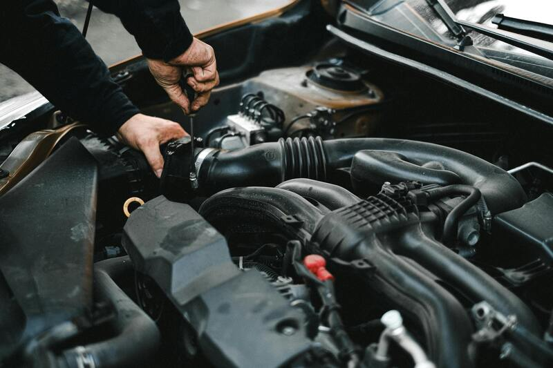
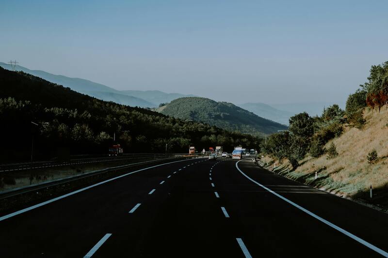
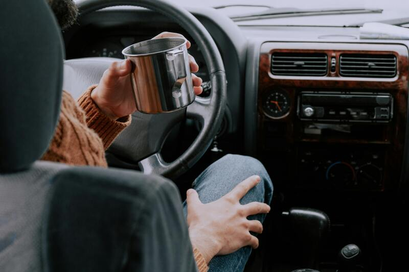

Waze - Rio de Janeiro Use o Waze Live Map em qualquer celular ou computador. Veja o trânsito ao vivo sem instalar o app Waze. Prático e perfeito para planejar rapidamente suas viagens
Waze - São Paulo Ganhe tempo nos seus deslocamentos com o Waze Live Map. Planeje viagens com um mapa preciso e descubra rotas para não ficar parado no trânsito
Waze - Belo Horizonte Evite atrasos com o Waze Live Map. Confira o trânsito ao vivo, atualizado pelos usuários da comunidade Waze, mesmo sem câmeras de trânsito no local
 Revisão preventiva Antes de viajar, revise itens essenciais: pneus (calibragem, estepe, desgaste), freios (pastilhas e fluido), óleo do motor (nível do óleo), sistema de arrefecimento (nível da água), luzes (faróis, setas, freios), palhetas do limpador e parte elétrica. Confira também macaco, chave de roda, triângulo e documentos (CNH/CRLV)
 Segurança no trânsito Para uma viagem segura, faça a revisão preventiva do veículo (freios, pneus, luzes), descanse bem, use o cinto de segurança (inclusive no banco traseiro), respeite os limites de velocidade e evite celular. Planeje o trajeto, faça paradas a cada 2 horas para alongar e mantenha distância segura dos outros veículos
 Dicas úteis Pratique a direção defensiva mantendo uma distância segura (mínimo de 2 segundos do carro da frente), respeite os limites de velocidade e sinalize manobras com antecedência. Evite distrações, faça pausas para descanso a cada 2 horas. Em viagens mais longas, leve água, lanches leves e balas para manter a energia